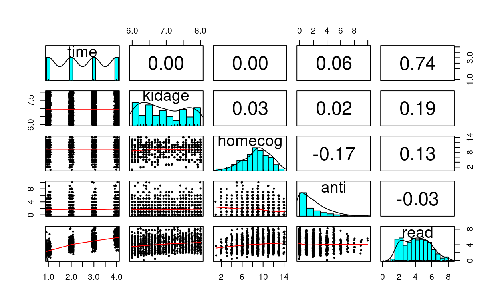
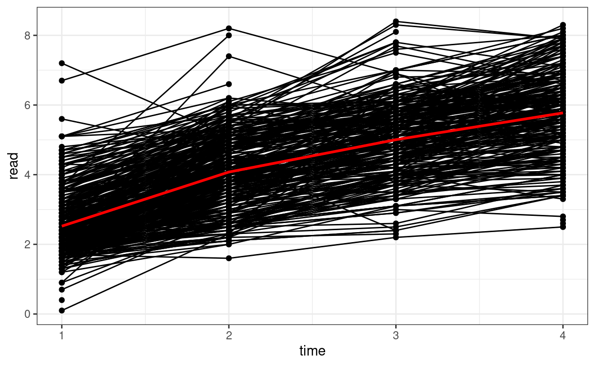
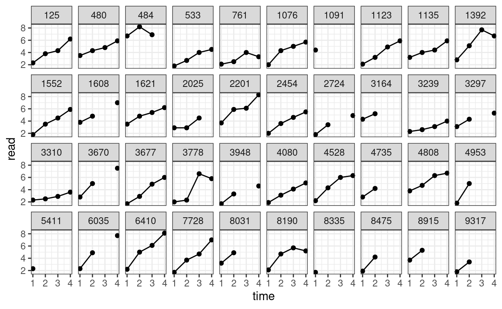
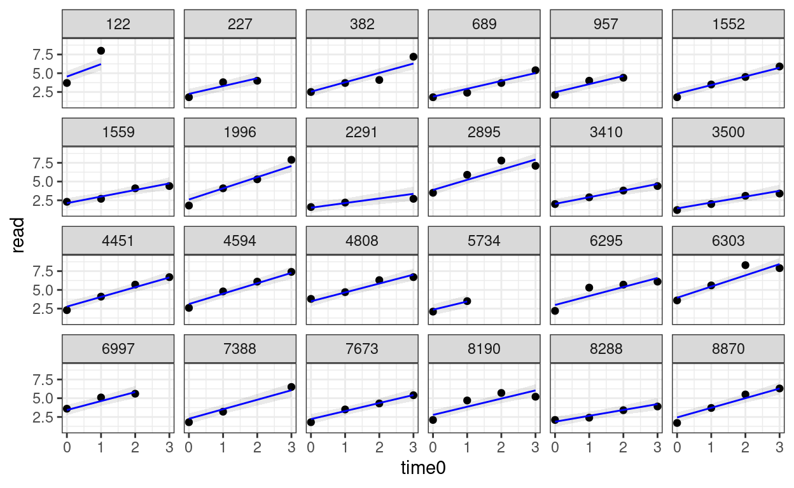
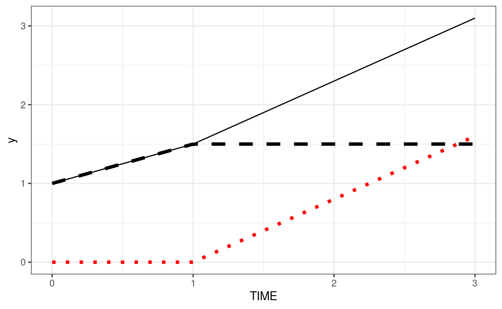
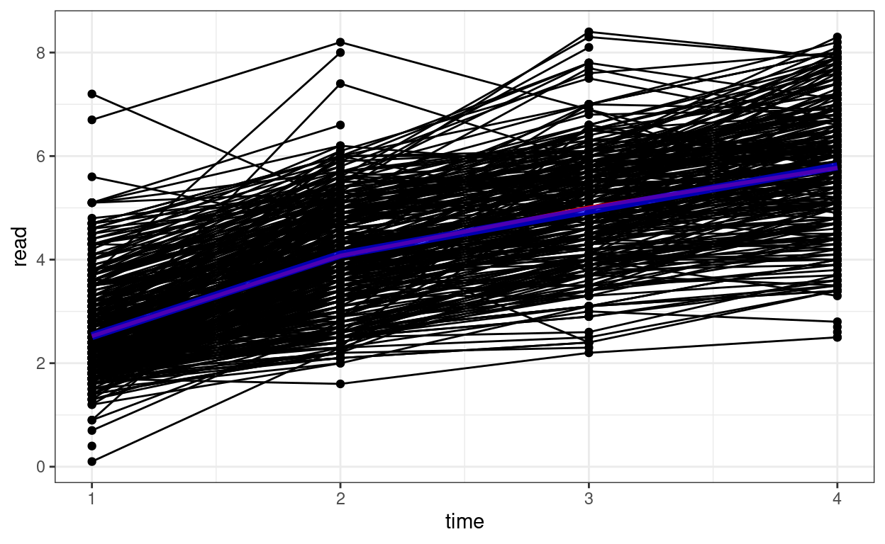
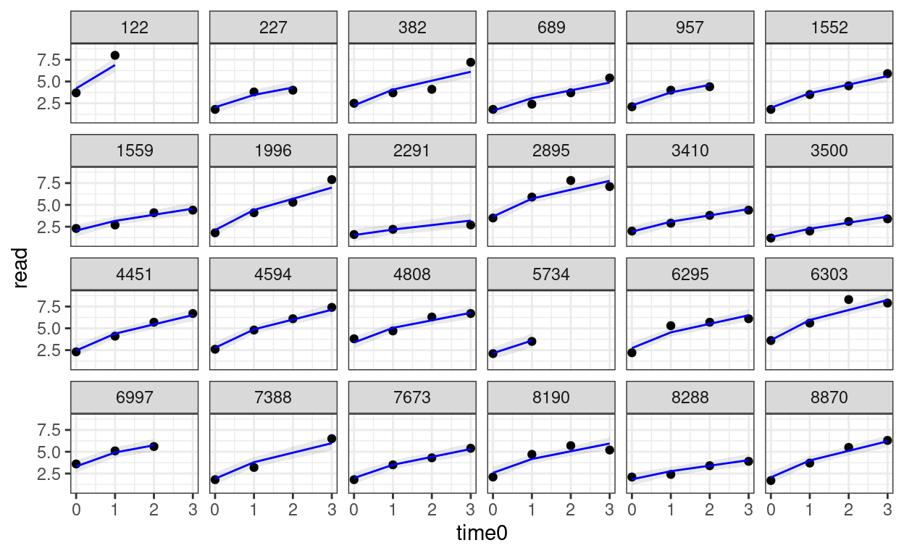
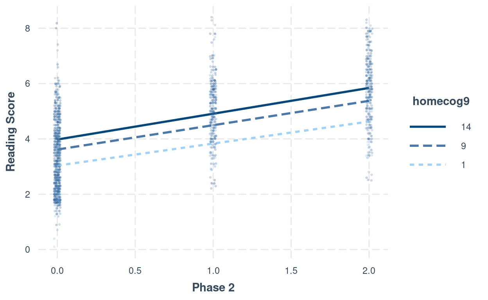
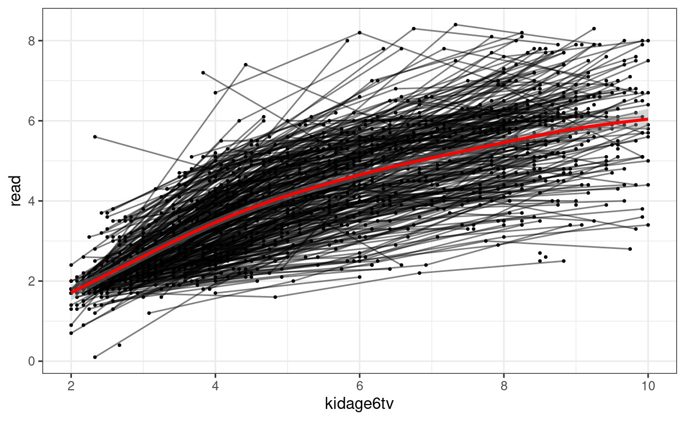
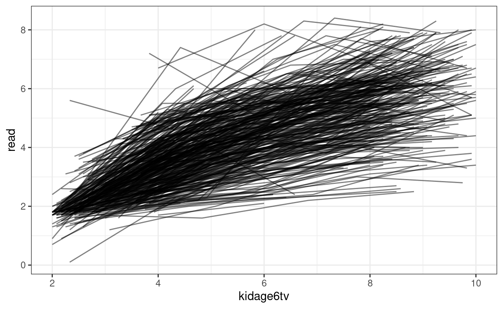

\[ \newcommand{\bv}[1]{\boldsymbol{\mathbf{#1}}} \]
Click here to download the Rmd file: week8-longitudinal-1.Rmd
# To install a package, run the following ONCE (and only once on your computer)
# install.packages("psych")
library(here) # makes reading data more consistent
library(tidyverse) # for data manipulation and plotting
library(haven) # for importing SPSS/SAS/Stata data
library(lme4) # for multilevel analysis
library(glmmTMB) # for longitudinal analysis
library(modelsummary) # for making tables
library(interactions) # for interaction plots
theme_set(theme_bw()) # Theme; just my personal preference
# Read in the data from gitHub (need Internet access)
curran_wide <- read_sav("https://github.com/MultiLevelAnalysis/Datasets-third-edition-Multilevel-book/raw/master/chapter%205/Curran/CurranData.sav")
# Make id a factor
curran_wide # print the data
># # A tibble: 405 × 15
># id anti1 anti2 anti3 anti4 read1 read2 read3 read4 kidgen
># <dbl> <dbl> <dbl> <dbl> <dbl> <dbl> <dbl> <dbl> <dbl> <dbl+lbl>
># 1 22 1 2 NA NA 2.1 3.9 NA NA 0 [girl]
># 2 34 3 6 4 5 2.1 2.9 4.5 4.5 1 [boy]
># 3 58 0 2 0 1 2.3 4.5 4.2 4.6 0 [girl]
># 4 122 0 3 1 1 3.7 8 NA NA 1 [boy]
># 5 125 1 1 2 1 2.3 3.8 4.3 6.2 0 [girl]
># 6 133 3 4 3 5 1.8 2.6 4.1 4 1 [boy]
># 7 163 5 4 5 5 3.5 4.8 5.8 7.5 1 [boy]
># 8 190 0 NA NA 0 2.9 6.1 NA NA 0 [girl]
># 9 227 0 0 2 1 1.8 3.8 4 NA 0 [girl]
># 10 248 1 2 2 0 3.5 5.7 7 6.9 0 [girl]
># # … with 395 more rows, and 5 more variables: momage <dbl>,
># # kidage <dbl>, homecog <dbl>, homeemo <dbl>, nmis <dbl>To perform multilevel analysis, we need to restructure the data from a wide format to a long format:
# Using the new `tidyr::pivot_longer()` function
curran_long <- curran_wide %>%
pivot_longer(
c(anti1:anti4, read1:read4), # variables that are repeated measures
# Convert 8 columns to 3: 2 columns each for anti/read (.value), and
# one column for time
names_to = c(".value", "time"),
# Extract the names "anti"/"read" from the names of the variables for the
# value columns, and then the number to the "time" column
names_pattern = "(anti|read)([1-4])",
# Convert the "time" column to integers
names_transform = list(time = as.integer)
)
curran_long %>%
select(id, anti, read, time, everything())
># # A tibble: 1,620 × 10
># id anti read time kidgen momage kidage homecog homeemo nmis
># <dbl> <dbl> <dbl> <int> <dbl+l> <dbl> <dbl> <dbl> <dbl> <dbl>
># 1 22 1 2.1 1 0 [gir… 28 6.08 13 10 4
># 2 22 2 3.9 2 0 [gir… 28 6.08 13 10 4
># 3 22 NA NA 3 0 [gir… 28 6.08 13 10 4
># 4 22 NA NA 4 0 [gir… 28 6.08 13 10 4
># 5 34 3 2.1 1 1 [boy] 28 6.83 9 9 0
># 6 34 6 2.9 2 1 [boy] 28 6.83 9 9 0
># 7 34 4 4.5 3 1 [boy] 28 6.83 9 9 0
># 8 34 5 4.5 4 1 [boy] 28 6.83 9 9 0
># 9 58 0 2.3 1 0 [gir… 28 6.5 9 6 0
># 10 58 2 4.5 2 0 [gir… 28 6.5 9 6 0
># # … with 1,610 more rowscurran_long %>%
select(time, kidage, homecog, anti, read) %>%
psych::pairs.panels(jiggle = TRUE, factor = 0.5, ellipses = FALSE,
cex.cor = 1, cex = 0.5)

What distinguishes longitudinal data from usual cross-sectional multilevel data is the temporal ordering. In the example of students nested within schools, we don’t say that student 1 is naturally before student 2, and it doesn’t really matter if one just reorder the students. However, in longitudinal data such temporal sequence is very important, and we cannot simply rearrange the observation at time 2 to be at time 1. A related concern is the presence of autocorrelation, with which observations closer in time will be more similar to each other.
# Plotting
p1 <- ggplot(curran_long, aes(x = time, y = read)) +
geom_point() +
geom_line(aes(group = id)) + # add lines to connect the data for each person
# add a mean trajectory
stat_summary(fun = "mean", col = "red", size = 1, geom = "line")
p1

We can see that on average there is an increasing trend across time, but also there is a lot of variations in each individual’s starting point and the trajectory of change.
We can also plot the trajectory for a random sample of individuals:
# Randomly sample 40 individuals
set.seed(1349)
sampled_id <- sample(unique(curran_long$id), 40)
curran_long %>%
filter(id %in% sampled_id) %>%
ggplot(aes(x = time, y = read)) +
geom_point() +
geom_line() + # add lines to connect the data for each person
facet_wrap(~ id, ncol = 10)

# Easier with the wide data set
# Covariance matrix:
curran_wide %>%
select(starts_with("read")) %>%
cov(use = "complete") %>% # listwise deletion
round(2L) # two decimal places
># read1 read2 read3 read4
># read1 0.77 0.55 0.52 0.48
># read2 0.55 1.01 0.90 0.92
># read3 0.52 0.90 1.22 1.09
># read4 0.48 0.92 1.09 1.48# Correlation matrix
curran_wide %>%
select(starts_with("read")) %>%
cor(use = "complete") %>% # listwise deletion
round(2L) # two decimal places
># read1 read2 read3 read4
># read1 1.00 0.62 0.53 0.45
># read2 0.62 1.00 0.81 0.75
># read3 0.53 0.81 1.00 0.81
># read4 0.45 0.75 0.81 1.00You can see the variances increase over time, and the correlation is generally stronger for observations closer in time.
To see whether those who dropped out or had missing data differed in some characteristics as those who did not drop out, let’s identify the group with complete data on read, and the group without complete data on read
# Create grouping
curran_wide <- curran_wide %>%
# Compute summaries by rows
rowwise() %>%
# First compute the number of missing occasions
mutate(nmis_read = sum(is.na(c_across(read1:read4))),
# Complete only when nmis_read = 0
complete = if_else(nmis_read == 0, "complete", "incomplete")) %>%
ungroup()
# Compare the differences
datasummary((anti1 + read1 + kidgen + momage + kidage + homecog + homeemo) ~
complete * (Mean + SD), data = curran_wide)
| Mean | SD | Mean | SD | |
|---|---|---|---|---|
| anti1 | 1.49 | 1.54 | 1.89 | 1.78 |
| read1 | 2.50 | 0.88 | 2.55 | 0.99 |
| kidgen | 0.52 | 0.50 | 0.48 | 0.50 |
| momage | 25.61 | 1.85 | 25.42 | 1.92 |
| kidage | 6.90 | 0.62 | 6.97 | 0.66 |
| homecog | 9.09 | 2.46 | 8.63 | 2.70 |
| homeemo | 9.35 | 2.23 | 9.01 | 2.41 |
The two groups are pretty similar, except that the group with missing seem to have higher baseline antisocial score, and lower homecog. In actually analyses, you may want to adjust for these variables by including them in the model (as covariates), if you suspect the results may be confounded by higher probability of dropping out.
Of course, the two groups could still be different in important characteristics that are not included in the data. It requires careful investigation of why the data were missing
You can use the lme4 package for the basic model:
># Linear mixed model fit by REML ['lmerMod']
># Formula: read ~ (1 | id)
># Data: curran_long
>#
># REML criterion at convergence: 5055.9
>#
># Scaled residuals:
># Min 1Q Median 3Q Max
># -2.21699 -0.79402 0.02351 0.72466 2.34342
>#
># Random effects:
># Groups Name Variance Std.Dev.
># id (Intercept) 0.3005 0.5482
># Residual 2.3903 1.5461
># Number of obs: 1325, groups: id, 405
>#
># Fixed effects:
># Estimate Std. Error t value
># (Intercept) 4.11279 0.05093 80.75However, lme4 has some limitations with longitudinal data analysis, as it assumes that what is called a compound symmetry error covariance structure. Basically that means that the within-person (level-1) error has constant variance (i.e., \(\sigma^2\)) over time, and the errors from one time point to the next is not correlated after conditioning on the fixed and random effects. In other words, whatever that causes one to has a higher (or lower) score than predicted for today will not carry over for tomorrow.
There are a few more flexible packages for handling longitudinal data. You will see people use nlme a lot. There are also packages with Bayesian estimation, such as MCMCglmm and brms. For this class, we will use glmmTMB, a package that has a lot of the features for longitudinal data and has a very similar structure as lme4. Let’s replicate the results from lme4:
# Default in glmmTMB is ML; need to specify REML is desired
m00 <- glmmTMB(read ~ (1 | id), data = curran_long, REML = TRUE)
summary(m00)
># Family: gaussian ( identity )
># Formula: read ~ (1 | id)
># Data: curran_long
>#
># AIC BIC logLik deviance df.resid
># 5061.9 5077.5 -2528.0 5055.9 1323
>#
># Random effects:
>#
># Conditional model:
># Groups Name Variance Std.Dev.
># id (Intercept) 0.3005 0.5482
># Residual 2.3903 1.5461
># Number of obs: 1325, groups: id, 405
>#
># Dispersion estimate for gaussian family (sigma^2): 2.39
>#
># Conditional model:
># Estimate Std. Error z value Pr(>|z|)
># (Intercept) 4.1128 0.0513 80.18 <2e-16 ***
># ---
># Signif. codes: 0 '***' 0.001 '**' 0.01 '*' 0.05 '.' 0.1 ' ' 1You can see that the results are similar. Let’s look at the ICC (i.e., proportion of variance at the between-person level).
(vc_m00 <- VarCorr(m00)) # shows the random effect SDs
>#
># Conditional model:
># Groups Name Std.Dev.
># id (Intercept) 0.54816
># Residual 1.54606vc_m00[[1]]$id[1, 1] # intercept variance (tau_0^2)
># [1] 0.3004824attr(vc_m00[[1]], "sc")^2 # lv-1 error variance (sigma^2)
># [1] 2.390294# ICC: tau_0^2 / (tau_0^2 + sigma^2)
vc_m00[[1]]$id[1, 1] /
(vc_m00[[1]]$id[1, 1] + attr(vc_m00[[1]], "sc")^2)
># [1] 0.1116713Instead of assuming a specific growth shape (e.g., linear), one can instead just allow each time point to have its own mean. This provides good fit to the data, but is limited because it does not allow for interpretable description of how individuals change over time, and does not test for any trends. Therefore, more commonly it is used as a comparison to more simplified growth models.
# Compound Symmetry (i.e., same as repeated measure ANOVA)
# Use `0 +` to suppress the intercept
m_cs <- glmmTMB(read ~ 0 + factor(time) + (1 | id),
data = curran_long,
REML = TRUE
)
summary(m_cs) # omnibus test for time
># Family: gaussian ( identity )
># Formula: read ~ 0 + factor(time) + (1 | id)
># Data: curran_long
>#
># AIC BIC logLik deviance df.resid
># 3387.6 3418.7 -1687.8 3375.6 1323
>#
># Random effects:
>#
># Conditional model:
># Groups Name Variance Std.Dev.
># id (Intercept) 0.7900 0.8888
># Residual 0.4075 0.6383
># Number of obs: 1325, groups: id, 405
>#
># Dispersion estimate for gaussian family (sigma^2): 0.407
>#
># Conditional model:
># Estimate Std. Error z value Pr(>|z|)
># factor(time)1 2.52272 0.05438 46.39 <2e-16 ***
># factor(time)2 4.06800 0.05548 73.32 <2e-16 ***
># factor(time)3 5.01187 0.06015 83.33 <2e-16 ***
># factor(time)4 5.81222 0.06044 96.16 <2e-16 ***
># ---
># Signif. codes: 0 '***' 0.001 '**' 0.01 '*' 0.05 '.' 0.1 ' ' 1From this model you can compute the conditional ICC, which is the proportion of between-person variance out of the total variance in the detrended data.
(vc_cs <- VarCorr(m_cs)) # shows the random effect SDs
>#
># Conditional model:
># Groups Name Std.Dev.
># id (Intercept) 0.88884
># Residual 0.63834vc_cs[[1]]$id[1, 1] # intercept variance (tau_0^2)
># [1] 0.7900319attr(vc_cs[[1]], "sc")^2 # lv-1 error variance (sigma^2)
># [1] 0.4074799# ICC: tau_0^2 / (tau_0^2 + sigma^2)
vc_cs[[1]]$id[1, 1] /
(vc_cs[[1]]$id[1, 1] + attr(vc_cs[[1]], "sc")^2)
># [1] 0.6597279So after removing the trend, the between-person variance is larger than the within-person variance.
Level 1: Within-Person
\[\text{read}_{ti} = \beta_{0i} + \beta_{1i} \text{time}_{ti} + e_{ti}\]
Level 2: Between-Person
\[ \begin{aligned} \beta_{0i} = \gamma_{00} + u_{0i} \\ \beta_{1i} = \gamma_{10} + u_{1i} \end{aligned} \]
# Make 0 the initial time
curran_long <- curran_long %>%
mutate(time0 = time - 1)
# Fit a linear growth model with no random slopes (not commonly done)
m_gca <- glmmTMB(read ~ time0 + (time0 | id), data = curran_long, REML = TRUE)
summary(m_gca)
># Family: gaussian ( identity )
># Formula: read ~ time0 + (time0 | id)
># Data: curran_long
>#
># AIC BIC logLik deviance df.resid
># 3394.0 3425.1 -1691.0 3382.0 1321
>#
># Random effects:
>#
># Conditional model:
># Groups Name Variance Std.Dev. Corr
># id (Intercept) 0.57310 0.7570
># time0 0.07459 0.2731 0.29
># Residual 0.34584 0.5881
># Number of obs: 1325, groups: id, 405
>#
># Dispersion estimate for gaussian family (sigma^2): 0.346
>#
># Conditional model:
># Estimate Std. Error z value Pr(>|z|)
># (Intercept) 2.69609 0.04531 59.50 <2e-16 ***
># time0 1.11915 0.02183 51.27 <2e-16 ***
># ---
># Signif. codes: 0 '***' 0.001 '**' 0.01 '*' 0.05 '.' 0.1 ' ' 1random_persons <- sample(unique(curran_long$id), size = 24)
broom.mixed::augment(m_gca) %>%
# Select only the 24 participants
filter(id %in% random_persons) %>%
ggplot(aes(x = time0, y = read)) +
geom_point() +
# Add 95% confidence band
geom_ribbon(aes(ymin = .fitted - 2 * .se.fit,
ymax = .fitted + 2 * .se.fit),
alpha = 0.1) +
geom_line(aes(y = .fitted), col = "blue") +
facet_wrap(~ id, ncol = 6)

A piecewise linear growth assumes that there are two or more phases of linear change across time. For example, we can assume that, for our data, phase 1 is from Time 0 to Time 1, and phase 2 is from Time 1 to Time 3.
Because we’re estimating two slopes, we need two predictors: phase1 represents the initial slope from Time 0 to Time 1, and phase2 represents the slope from Time 1 to Time 3. The coding is shown below:
\[\begin{bmatrix} \textrm{phase1} & \textrm{phase2} \\ 0 & 0 \\ 1 & 0 \\ 1 & 1 \\ 1 & 2 \end{bmatrix}\]
To understand the coding, in phase1 the line changes from Time 0 to Time 1, but stays there. phase2 has 0 from Time 0 to Time 1 as nothing should have happened. Then, From Time 1 to Time 3 it starts to increase linearly.
One way to check whether you’ve specified the coding correctly is to sum the numbers in every row, which you should get back 0, 1, 2, 3, . . .
Below is an example where intercept = 1, growth in phase 1 = 0.5, growth in phase 2 = 0.8. The dashed line shows the contribution from phase1 (plus the intercept). The red dotted line shows the contribution from phase2.
demo_df <- tibble(TIME = c(0, 1, 2, 3))
ggplot(demo_df, aes(x = TIME)) +
stat_function(fun = function(x) 1 + 0.5 * pmin(x, 1),
linetype = "dashed", size = 1.5) +
stat_function(fun = function(x) 0.8 * pmax(x - 1, 0), col = "red",
linetype = "dotted", size = 1.5) +
stat_function(fun = function(x) 1 + 0.5 * pmin(x, 1) + 0.8 * pmax(x - 1, 0))

Now, we assume Time 0 to Time 1 has one slope, and Time 1 to Time 3 has another slope.
# Compute phase1 and phase2
curran_long <- curran_long %>%
mutate(phase1 = pmin(time0, 1), # anything bigger than 1 becomes 1
phase2 = pmax(time0 - 1, 0)) # set time to start at TIME 1, and then make
# anything smaller than 0 to 0
# Check the coding:
curran_long %>%
select(time0, phase1, phase2) %>%
distinct()
># # A tibble: 4 × 3
># time0 phase1 phase2
># <dbl> <dbl> <dbl>
># 1 0 0 0
># 2 1 1 0
># 3 2 1 1
># 4 3 1 2# Fit the piecewise growth model
m_pw <- glmmTMB(read ~ phase1 + phase2 + (phase1 + phase2 | id),
data = curran_long, REML = TRUE,
# The default optimizer did not converge; try optim
control = glmmTMBControl(
optimizer = optim,
optArgs = list(method = "BFGS")
)
)
summary(m_pw)
Average predicted trajectory on the spaghetti plot:
# Plot the predicted growth shape (in blue):
# `tibble()` is used to create a tibble object, which is the data frame used in
# tidyverse
pred_pw <- tibble(time = 1:4,
phase1 = c(0, 1, 1, 1),
phase2 = c(0, 0, 1, 2),
id = NA)
pred_pw <- pred_pw %>%
mutate(read = predict(m_pw, newdata = pred_pw, re.form = NA))
p1 +
geom_line(data = pred_pw, col = "blue", size = 2, alpha = 0.7)

Predicted trajectories at the individual level
# Add predicted lines to individual trajectories
broom.mixed::augment(m_pw) %>%
# compute the original time
mutate(time0 = phase1 + phase2) %>%
# Select only the 24 participants
filter(id %in% random_persons) %>%
ggplot(aes(x = time0, y = read)) +
geom_point() +
# Add 95% confidence band
geom_ribbon(aes(ymin = .fitted - 2 * .se.fit,
ymax = .fitted + 2 * .se.fit),
alpha = 0.1) +
geom_line(aes(y = .fitted), col = "blue") +
facet_wrap(~ id, ncol = 6)

This is what is called the fully multivariate model in the text. The model is saturated in the sense that it perfectly fits the means and covariances of the outcome variable among the various time points. The model, however, does not allow one to test any structure one is interested, so in practice it is mostly used to check how good or bad the chosen model deviates from this “perfect” model.
# I use ML estimation so that both the fixed and the random part can be compared
m_sat_ml <- glmmTMB(read ~ 0 + factor(time) + (0 + factor(time) | id),
dispformula = ~0,
data = curran_long
)
m_gca_ml <- glmmTMB(read ~ time0 + (time0 | id), data = curran_long)
m_pw_ml <- glmmTMB(read ~ phase1 + phase2 + (phase1 + phase2 | id),
data = curran_long,
# The default optimizer did not converge; try optim
control = glmmTMBControl(
optimizer = optim,
optArgs = list(method = "BFGS")
)
)
# Compare the models
anova(m_sat_ml, m_gca_ml, m_pw_ml)
># Data: curran_long
># Models:
># m_gca_ml: read ~ time0 + (time0 | id), zi=~0, disp=~1
># m_pw_ml: read ~ phase1 + phase2 + (phase1 + phase2 | id), zi=~0, disp=~1
># m_sat_ml: read ~ 0 + factor(time) + (0 + factor(time) | id), zi=~0, disp=~0
># Df AIC BIC logLik deviance Chisq Chi Df Pr(>Chisq)
># m_gca_ml 6 3383.8 3414.9 -1685.9 3371.8
># m_pw_ml 10 3215.4 3267.3 -1597.7 3195.4 176.4114 4 <2e-16
># m_sat_ml 14 3218.1 3290.7 -1595.0 3190.1 5.3151 4 0.2565
>#
># m_gca_ml
># m_pw_ml ***
># m_sat_ml
># ---
># Signif. codes: 0 '***' 0.001 '**' 0.01 '*' 0.05 '.' 0.1 ' ' 1The above shows that the fit of the piecewise model was not significantly worse than the saturated model.
Time-invariant covariate = Another way to say a level-2 variable
You can add homecog and its interaction to the model with age as predictor. Just that now there are two interaction terms: one with the first piece and the other with the second piece.
# Add `homecog` and its interaction with growth
# First, center homecog to 9
curran_long$homecog9 <- curran_long$homecog - 9
m_pw_homecog <- glmmTMB(
read ~ (phase1 + phase2) * homecog9 +
(phase1 + phase2 | id),
data = curran_long,
REML = TRUE,
# The default optimizer did not converge; try optim
control = glmmTMBControl(
optimizer = optim,
optArgs = list(method = "BFGS")
)
)
summary(m_pw_homecog)
# Interaction plot (phase1:homecog)
interact_plot(m_pw_homecog,
pred = "phase1",
modx = "homecog9",
modx.values = c(1, 9, 14) - 9,
modx.labels = c(1, 9, 14),
plot.points = TRUE,
point.size = 0.5,
point.alpha = 0.2,
jitter = 0.02,
x.label = "Phase 1",
y.label = "Reading Score")
# Interaction plot (phase2:homecog)
interact_plot(m_pw_homecog,
pred = "phase2",
modx = "homecog9",
modx.values = c(1, 9, 14) - 9,
modx.labels = c(1, 9, 14),
plot.points = TRUE,
point.size = 0.5,
point.alpha = 0.2,
jitter = 0.02,
x.label = "Phase 2",
y.label = "Reading Score")

msummary(
list(
"Compound Symmetry" = m00,
"GCA" = m_gca,
"Piecewise" = m_pw,
"Piecewise + homecog" = m_pw_homecog
),
group = group + term ~ model
)
| Compound Symmetry | GCA | Piecewise | Piecewise + homecog | ||
|---|---|---|---|---|---|
| (Intercept) | 4.113 | 2.696 | 2.523 | 2.527 | |
| (0.051) | (0.045) | (0.046) | (0.046) | ||
| time0 | 1.119 | ||||
| (0.022) | |||||
| phase1 | 1.562 | 1.567 | |||
| (0.043) | (0.042) | ||||
| phase2 | 0.879 | 0.880 | |||
| (0.025) | (0.025) | ||||
| homecog9 | 0.044 | ||||
| (0.018) | |||||
| phase1 × homecog9 | 0.042 | ||||
| (0.017) | |||||
| phase2 × homecog9 | 0.011 | ||||
| (0.010) | |||||
| id | sd__(Intercept) | 0.548 | 0.757 | 0.778 | 0.771 |
| sd__time0 | 0.273 | ||||
| cor__(Intercept).time0 | 0.286 | ||||
| sd__phase1 | 0.476 | 0.464 | |||
| sd__phase2 | 0.232 | 0.230 | |||
| cor__(Intercept).phase1 | 0.129 | 0.104 | |||
| cor__(Intercept).phase2 | −0.154 | −0.168 | |||
| cor__phase1.phase2 | 0.957 | 0.961 | |||
| Residual | sd__Observation | 1.546 | 0.588 | 0.501 | 0.502 |
| AIC | 5061.9 | 3394.0 | 3229.7 | 3236.7 | |
| BIC | 5077.5 | 3425.1 | 3281.6 | 3304.1 | |
| Log.Lik. | −2527.974 | −1691.000 | −1604.869 | −1605.341 |
MLM can handle varying measurement occasions. For example, maybe some students are first measured in September when the semester starts, whereas other students are first measured in October or November. How important this difference depends on the research being studied. For especially infant/early childhood research, one month can already mean a lot of growth, and so it is important to take that into account.
Instead of using time, one can instead model an outcome variable as a function of age, with the kidage variable. To use age, however, one may not want to start at age = 0. In the data set, the minimum age is 6. Therefore, we can subtract 6 from the original kidage variable, so that the zero point represent someone at age = 6.
Here is an example:
# Subtract age by 6
curran_long <- curran_long %>%
mutate(kidagetv = kidage + time * 2,
# Compute the age for each time point
kidage6tv = kidagetv - 6)
# Plot the data
ggplot(curran_long, aes(x = kidage6tv, y = read)) +
geom_point(size = 0.5) +
# add lines to connect the data for each person
geom_line(aes(group = id), alpha = 0.5) +
# add a mean trajectory
geom_smooth(col = "red", size = 1)

# Fit a quadratic model
m_agesq <- glmmTMB(
read ~ kidage6tv + I(kidage6tv^2) +
(kidage6tv + I(kidage6tv^2) | id),
data = curran_long,
REML = TRUE
)
summary(m_agesq)
># Family: gaussian ( identity )
># Formula:
># read ~ kidage6tv + I(kidage6tv^2) + (kidage6tv + I(kidage6tv^2) |
># id)
># Data: curran_long
>#
># AIC BIC logLik deviance df.resid
># NA NA NA NA 1318
>#
># Random effects:
>#
># Conditional model:
># Groups Name Variance Std.Dev. Corr
># id (Intercept) 0.0518108 0.2276
># kidage6tv 0.1026970 0.3205 0.95
># I(kidage6tv^2) 0.0009423 0.0307 -1.00 -0.93
># Residual 0.2464459 0.4964
># Number of obs: 1325, groups: id, 405
>#
># Dispersion estimate for gaussian family (sigma^2): 0.246
>#
># Conditional model:
># Estimate Std. Error z value Pr(>|z|)
># (Intercept) 1.737877 0.038614 45.01 <2e-16 ***
># kidage6tv 0.930178 0.028812 32.28 <2e-16 ***
># I(kidage6tv^2) -0.049597 0.003486 -14.23 <2e-16 ***
># ---
># Signif. codes: 0 '***' 0.001 '**' 0.01 '*' 0.05 '.' 0.1 ' ' 1You can then perform the diagnostics and see whether the individual growth shape appears to be quadratic.
random_persons <- sample(unique(curran_long$id), size = 24)
broom.mixed::augment(m_agesq) %>%
# Select only the 24 participants
filter(id %in% random_persons) %>%
ggplot(aes(x = kidage6tv, y = read)) +
geom_point() +
# Add 95% confidence band
geom_ribbon(aes(ymin = .fitted - 2 * .se.fit,
ymax = .fitted + 2 * .se.fit),
alpha = 0.1) +
geom_line(aes(y = .fitted), col = "blue") +
facet_wrap(~ id, ncol = 6)
# Plot the predicted trajectories on the same panel
broom.mixed::augment(m_agesq) %>%
ggplot(aes(x = kidage6tv, y = read, group = factor(id))) +
geom_line(alpha = 0.5)
